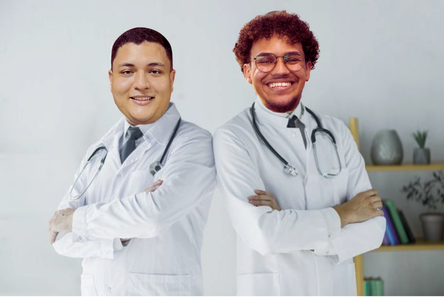

Bem-vindo à E&E Clínicas
Fundada pelos médicos Eduardo Oliveira e Matheus Eduardo, a E&E Clínicas tem como objetivo oferecer um atendimento médico personalizado e de alta qualidade. Com anos de experiência, nossos fundadores acreditam que o cuidado humano aliado à tecnologia é essencial para proporcionar a melhor experiência aos pacientes.
Nossa Missão
Nossa missão é oferecer cuidados de saúde de excelência, priorizando o bem-estar físico e emocional de nossos pacientes. Trabalhamos com ética, inovação e empatia, garantindo que cada atendimento seja único.
Nossos Valores
Na E&E Clínicas, seguimos valores que norteiam nosso trabalho:
- Empatia: Respeitamos e tratamos cada paciente como único, garantindo um atendimento humanizado.
- Excelência: Estamos sempre em busca da melhor prática médica e das inovações que podem melhorar a vida dos pacientes.
- Ética: Atuamos de forma transparente, com compromisso e responsabilidade.